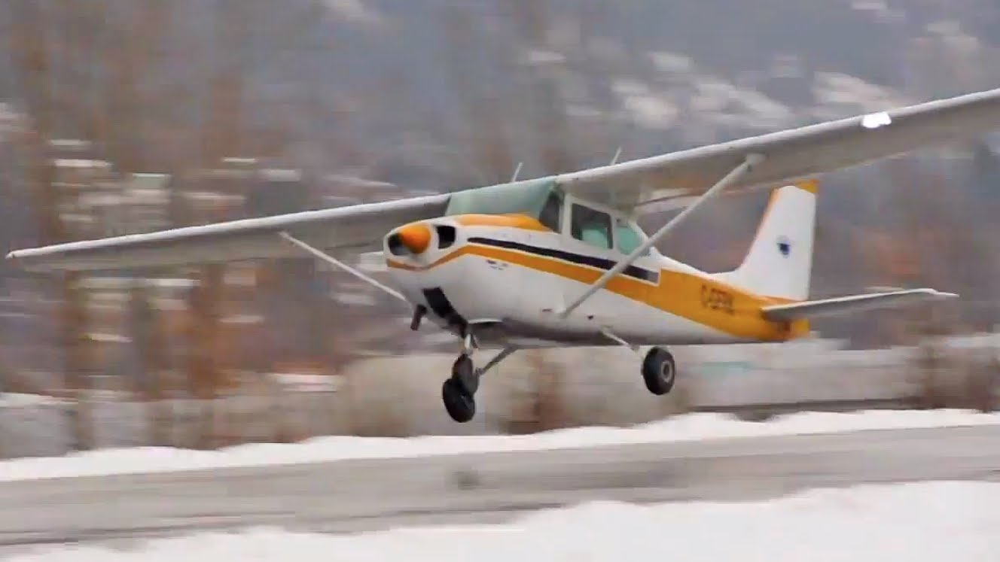
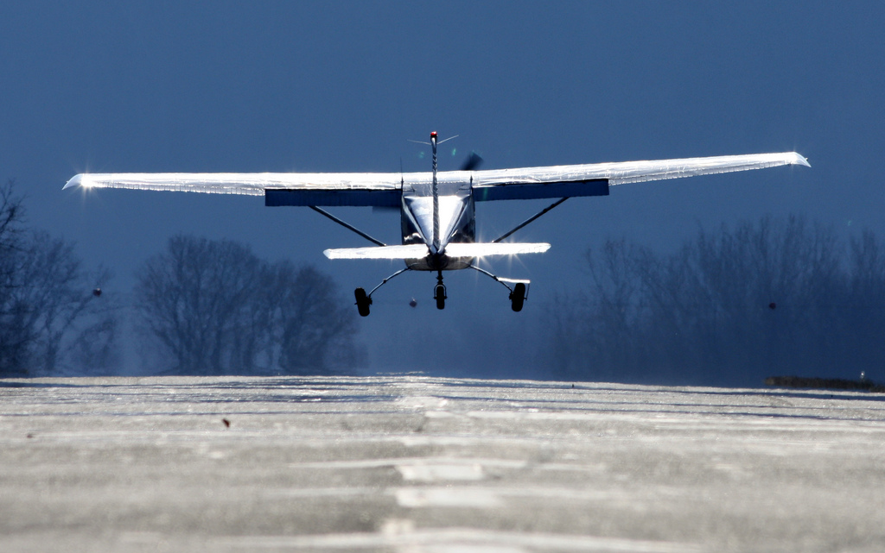

Takeoff
Before the pilot get airborne he/she must first taxi where instructed by the Tower.Then he/she can begin their takeoff.

Before Takeoff
- Brakes - Press & Hold Both Brakes
- Turn Yoke Left - L Aileron Up/ R Aileron Down
- Turn Yoke Right - R Aileron Up/ L Aileron Down
- Pull Yoke Back - Elevator Up
- Push Yoke Back - Elevator Down
- Trim - Set for Takeoff
- Carb Heat - Cold
- Throttle - 1700RPM
- Mixture - Rich/Set to Max RPM
Gauges
- Magnetos (Left & Right) - 50 RPM difference
- Suction Gauge - In Green
- Oil Pressure - In Green
- Ammeter - Charging
- Carb Heat - Pull Out/Notice RPM drop
- Throttle - Idle/Engine doesn't stop
- Carb Heat - Push in/Notice RPM rise
- Throttle - 1000RPM
Flight Instruments
- Directional Gyro - Set to Magnetic Compass
- Attitude Indicator - Adjust Horizon
- Turn Indicator - Wings Level/Ball Ctr
- Altimeter - AWOS/ATIS (Equals Field Elevation)
- Airspeed Indicator - Should read "0"
- Doors/Windows - Closed
- Transponder - Alt/1200
- Radio Twr/CTAF - Request Takeoff
Normal Take Off
- Wing Flaps - 0 degrees
- Mixture - Rich
- Carb Heat - Cold (in Fully)
- Throttle - Full Open (in Fully)
- Elevator - Lift Nose @65 MPH
- Climb Speed - 80-85 MPH
